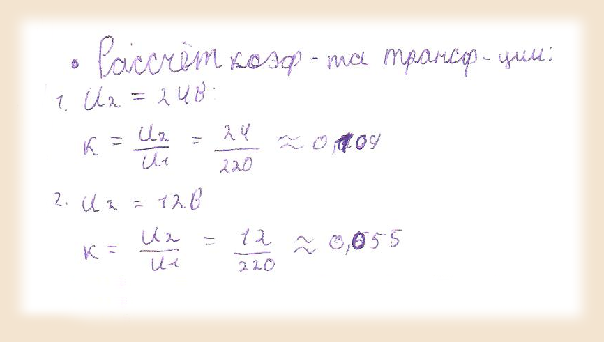

Ход выполнения работы
а) Построим схему соответсвующую условию (ключи для включения/отключения фильтра и стабилизатора):
Выставим необходимые параметры источника:
По заданному напряжению и мощности рассчитаем сопротивление нагрузки:
Подберем стабилитрон с напряжением стаблизации равным напряжению на нагрузке:
Рассчитаем балластное сопротивление стабилитрона из условия, что напряжение на на вторичной обмотке трансформатора равно 24 вольта (такое напряжение выберем для проверки стабилитрона):
Рассчитаем коэффициенты трансформации для случаев исследования с стабилизатором и без. (При исследовании со стабилизатором коэффициент больше для проверки его работы, в его отсутствие сопротивление на вторичной обмотке равно сопротивлению на нагрузке):
Диод подберем таким образом, чтобы он выдерживал прикладываемое к нему сопротивление:
Подберем наименьшей емкости конденсатор, при котором кривая напряжения на нагрузке максимально близка к прямой:
Как видно из изображения нормальный результат начинаем получать при емкости конденсатора в 100 млФ.
б) Снимем кривые напряжения (Желтая линия - напряжение на источнике; Зеленая линия - напряжение на вторичной обмотке; Красная линия - напряжение на нагрузке):
Снимем кривые при отключенном фильтре и стабилизаторе (используем коэффициент трансформации 0.055). :
Диаграмма для хорошей видимости линий:
Диаграмма по масштабу:
На данных диаграммах видим работу трансформатора, уменьшающего амплитуду колебаний при постоянной частоте, а также выпрямительного диода, приводящего колебания к одному знаку.
Снимем кривые при включенном фильтре и отключенном стабилизаторе (используем коэффициент трансформации 0.055). :
Диаграмма для хорошей видимости линий:

Диаграмма по масштабу:
На данных диаграммах видим работу фильтра, приводящего кривую напряжения к виду максимально близкому к прямой.
Снимем кривые при включенных фильтре и стабилизаторе (используем коэффициент трансформации 0.109). :
Диаграмма для хорошей видимости линий:
Диаграмма по масштабу:
На данных диаграммах видим работу стабилизатора, который при большем напряжении на вторичной обмотке трансформатора сохраняет на нагрузке необходимые 12 Вольт.
(Дополнение) Уменьшение емкости конденсатора:
Для существенного уменьшения необходимой для сглаживания емкости конденсатора в фильтре необходимо перенести фильтр за первичную обмотку трансформатора. В этом случае он будет подключен к куда большему напряжению и сможет эффективнее заряжаться и отдавать энергнию:
Таким образом удалось уменьшить емкость конденсатора с 100 млФ до 500 мкФ.